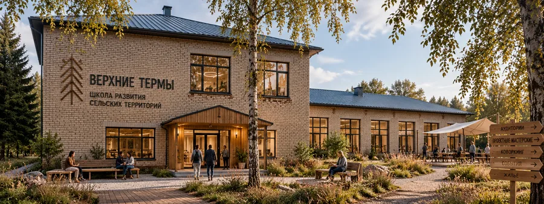

Пилотная территория «Чишмы»
Небольшое хозяйство может зарабатывать на переработке, новом сервисе или прямой продаже покупателю. Для этого нужны идеи и люди, которые помогут их проверить. В Чишминском районе мы хотим связать фермеров с местными школами, предпринимателями и разработчиками.
Концепция развития Чишминского районаМастерские в Верхних Термах
В концепции Центра агрокреаномики «Дом фермера» бывшей школе отведена роль учебной и проектной площадки. Здесь молодые люди смогут дорабатывать свои идеи, испытывать прототипы и искать наставников среди преподавателей, аграриев и предпринимателей.


Чем центр поможет хозяйствам
В «Доме фермера» производители смогут встретиться с покупателями и партнёрами, представить свой продукт и найти людей, с которыми можно испытать новый способ работы.
Ещё одна часть замысла посвящена сбыту продукции. Агроагрегатор мог бы собирать партии от нескольких производителей и помогать им поставлять продукты в магазины, кафе и рестораны.
С чего начнём
В апреле и мае 2027 года ребята познакомятся с молодёжной программой «Башкирское поле экспериментов». С июня по сентябрь 30 школьников из посёлка Чишмы будут работать в командах. На занятиях ребята попробуют исследовать спрос, проектировать цифровой сервис и считать затраты. В будущем центре они смогут доработать идею с наставником и увидеть, где в своём районе пригодятся эти навыки.
Открыть концепцию в PDF